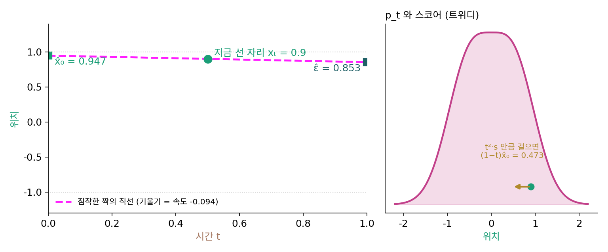

속도와 스코어의 다리: 같은 정보를 다른 변수로
디퓨전 모델의 신경망은 스코어나 섞은 잡음을 맞히고, 플로우 매칭의 신경망은 속도를 맞힌다. 잡음을 맞히는 신경망과 원래 그림을 맞히는 신경망과 스코어를 맞히는 신경망은 식 한 줄로 서로 바뀌는 같은 정보였다. 속도는 그 셋과 다른 무엇을 배우는 것일까, 아니면 넷째 꼴일 뿐일까? 두 모델을 쓰는 사람에게는 실제로 걸리는 물음이다. 속도를 내놓는 신경망으로 스코어가 필요한 샘플러를 쓸 수 있는지, 잡음을 내놓는 신경망을 속도로 걸을 수 있는지가 여기에 달려 있다.
짐작한 짝의 직선
지금 자리 xt를 지나는 짝들을 평균 내면 무엇이 되는지 보자. 짝마다 xt = (1 − t)x₀ + tε이므로, 양변을 그 자리에서 평균 내면 xt = (1 − t)x̂₀ + tε̂이다. 원래 그림의 평균 x̂₀와 섞인 잡음의 평균 ε̂를 잇는 직선이 지금 자리를 지나간다. 그 직선의 기울기가 주변 속도 v = ε̂ − x̂₀다. 신경망의 출력 하나는 「지금 자리를 지나는, 짐작한 짝 하나의 직선」을 통째로 알려 주는 셈이다.
앞의 두 식은 xt = (1 − t)x̂₀ + tε̂와 v = ε̂ − x̂₀를 연립해 푼 것이다. 마지막 식이 다리다. 잡음을 원래 그림의 (1 − t)배에 크기 t로 섞었으니, 트위디 공식은 (1 − t)x̂₀ = xt + t²s, 곧 안개 낀 자리에서 스코어 쪽으로 잡음 분산 t²만큼 걸으면 원래 그림의 평균(을 1 − t배 한 자리)에 닿는다고 말한다. 이것을 첫 식과 함께 v에 대해 풀면 마지막 식이 된다(문제 7에서 직접 해 본다).
두 점 데이터 ±1, t = 0.5, 자리 0.9에서 확인하자. 이 자리의 스코어는 −1.706이고, 다리 식으로 계산한 속도는 −(0.9 + 0.5 × (−1.706))/0.5 = −0.094다. 짐작한 짝은 x̂₀ = 0.9 − 0.5 × (−0.094) = 0.947, ε̂ = 0.9 + 0.5 × (−0.094) = 0.853이다. x̂₀는 두 점 데이터의 닫힌꼴 tanh(0.5 × 0.9/0.25) = 0.947과 맞고, ε̂는 스코어로 적은 −ts = 0.853과 맞는다.

신경망이 무엇을 내놓든 넷은 서로 바뀐다.
| 신경망이 내놓는 것 | 원래 그림의 평균 x̂₀ | 속도 v |
|---|---|---|
| 잡음 ε̂ | (xt − tε̂)/(1 − t) | (ε̂ − xt)/(1 − t) |
| 원래 그림 x̂₀ | 그대로 | (xt − x̂₀)/t |
| 스코어 s | (xt + t²s)/(1 − t) | −(xt + ts)/(1 − t) |
| 속도 v | xt − tv | 그대로 |
속도를 맞히는 신경망은 잡음을 맞히는 신경망과 다른 것을 배우지 않는다. 같은 정보를 다른 변수로 적었을 뿐이다. 신경망이 짝의 속도 ε − x₀를 맞히도록 출력을 정하는 이 꼴을 속도 예측 (짝의 속도를 맞히도록 신경망의 출력을 정하기 / velocity prediction)이라 한다. 분산을 보존하는 잡음 일정에서 쓰는 「v-예측」(샐리먼스와 호가 2022년에 쓴 출력 꼴)도 같은 생각으로, 그쪽 길(원을 따라 도는 길) 위의 빠르기를 맞힌다. 길이 다르니 식의 모양만 다르다.
역사: 두 갈래를 한 동전의 양면으로
플로우 매칭이 나온 뒤 한동안 「디퓨전이냐 플로우 매칭이냐」는 물음이 자주 오갔다. 디퓨전 모델을 만들어 온 사람들은 손실을 한 틀로 정리하는 쪽에서 답을 냈다. 킹마(Diederik Kingma)와 가오(Ruiqi Gao)는 2023년 논문에서 흔히 쓰는 디퓨전 손실들이 잡음 수준마다 비중을 다르게 준 ELBO(증거 하한, 로그우도 아래에 받친 바닥)의 적분으로 묶인다는 것을 보였다. 가오와 샐리먼스(Tim Salimans)를 포함한 여섯 연구자는 2024년 말 「디퓨전과 플로우 매칭의 만남: 한 동전의 양면(Diffusion Meets Flow Matching: Two Sides of the Same Coin)」이라는 글에서, 가우시안 잡음을 쓰는 한 둘은 같은 모델이고 한쪽을 다른 쪽으로 학습에서도 생성에서도 옮겨 쓸 수 있다고 정리했다. 그 글은 플로우 매칭의 잡음 일정(αt = 1 − t, σt = t)에서 디퓨전의 결정론적 샘플러(DDIM)와 플로우 매칭의 오일러 걸음이 같은 계산이라는 것도 보였다. 실제로 달라지는 것은 잡음 일정, 신경망에게 맞히게 하는 변수, 시간마다 손실에 주는 비중 세 가지다.
ML에서: 속도를 원래 그림으로 바꿔 읽는 코드 한 줄
그림 생성 도구 ComfyUI는 직선 일정으로 학습한 모델(코드 안 이름 CONST)의 출력을 속도로 보고, 샘플러에 넘기기 전에 원래 그림의 어림으로 바꾼다. 원래 그림의 어림은 「입력 − 출력 × 시그마」이고(comfy/model_sampling.py 의 calculate_denoised), 잡음을 섞을 때는 「시그마 × 잡음 + (1 − 시그마) × 그림」으로 섞는다(같은 파일의 noise_scaling). 시그마를 이 책의 t로 읽으면 x̂₀ = xt − tv 그대로다.
문제 6. 약속 장소까지
오후 2시 45분, 나는 고속도로의 3 km 지점에 있고 약속 장소가 12 km 지점이라고 짐작한다. 약속은 3시다. (가) 제시간에 닿으려면 지금부터 시속 몇 km로 가야 하는가? (나) 약속 장소가 사실 13 km 지점이라는 것을 알게 되면 빠르기는 얼마로 바뀌는가? (다) 같은 일이 오후 2시, 약속까지 한 시간 남았을 때 일어났다면?

(가)는 9 km를 15분에 가야 하니까 시속 36 km예요. (나)는 1 km 늘었으니 시속 1 km쯤 더 내면 되겠죠.

10 km를 15분에 가는 빠르기를 계산해 봐요.

시속 40 km요. 짐작이 1 km 바뀌었는데 빠르기는 4 km가 바뀌었어요. 남은 시간이 4분의 1시간이라 1 km를 4로 나누는 게 아니라 4를 곱하는 거네요.

(다)는 한 시간 남았으니까 시속 9 km에서 10 km, 1 km만 바뀌어. 같은 1 km 짐작 차이가 남은 시간에 반비례해서 커지는 거야.
빠르기 = (목적지 − 지금 자리)/남은 시간이죠. 지금 자리와 남은 시간을 알면, 목적지 짐작과 빠르기는 한 줄로 서로 바뀌어요.
마감 1시간 전에 과제 분량이 한 쪽 늘면 별일 아닌데, 5분 전에 늘면 큰일인 거랑 같아요.
문제 7. 속도장과 스코어를 잇는 다리 (킬러)
직선 길 xt = (1 − t)x₀ + tε, ε ~ N(0, I)에서 (가) 주변 속도가 v(y, t) = −(y + ts(y, t))/(1 − t)임을 보여라. (나) 이 식은 t → 1(잡음 쪽 끝)에서 어떻게 되는가? 정의 v(y, 1) = E[ε − x₀ ∣ ε = y]와 모순이 없는지 확인하라. (다) 다른 끝 t → 0(데이터 쪽 끝)에서 v = (y − x̂₀)/t는 어떻게 되는가?
v = E[ε − x₀ ∣ y]에서 시작할게요. ε = (y − (1 − t)x₀)/t라서 ε − x₀ = (y − x₀)/t예요. 그러니까 v = (y − E[x₀ ∣ y])/t예요.
좋아요. 이제 E[x₀ ∣ y]를 스코어로 쓰면 끝나요.

거기서 막혀요. pt(y) = ∫ pdata(x₀) N(y; (1 − t)x₀, t²) dx₀를 y로 미분해 봤는데, 적분 안에 x₀가 남아서 E[x₀ ∣ y]가 따로 떨어져 나오지를 않아요.

안개 낀 자리에서 스코어 쪽으로 걸으면 어디에 닿는다고 했죠?

트위디 공식이요! 그 미분에서 x₀가 남는 걸 「y를 본 뒤의 평균」으로 읽으면 끝나는 거였어요. 그림이 (1 − t)배, 잡음이 크기 t라서 (1 − t)E[x₀ ∣ y] = y + t²s예요. 넣으면 v = [y − (y + t²s)/(1 − t)]/t = [−ty − t²s]/(t(1 − t)) = −(y + ts)/(1 − t)예요. 됐어요.
(나)는 제가 할게요. t = 1을 넣으면 분모가 0이에요. 두 점 ±1 데이터, y = 0.3에서 코드에 t = 1을 넣으니 nan이 나와요. 그러니까 플로우 매칭의 속도장은 출발 순간에 무한대고, 그래서 실제 코드는 t를 1 바로 앞에서 시작하는 거예요.
정의대로 t = 1에서 계산하면요? 그때 x1 = ε예요.

ε = y라는 걸 알아도 짝지은 그림은 잡음과 상관없으니 E[ε − x₀ ∣ ε = y] = y − E[x₀], 두 점 ±1이면 y 그대로 0.3이에요. 유한해요. 그런데 식은 0으로 나누는데요?
t가 1에 가까울 때 pt는 무엇에 가까워요? 분자는 어떻게 되죠?

p1은 N(0, 1)이라 스코어가 −y에 가까워요. 분자 y + ts도 0으로 가니까 0/0이에요. 1 − t = δ로 두면 평균이 δE[x₀], 분산이 거의 1 − 2δ라서 s ≈ −y(1 + 2δ) + δE[x₀]예요. 분자는 δ(E[x₀] − y) + O(δ²)이고, δ로 나누고 앞의 마이너스를 붙이면 y − E[x₀]. 정의와 똑같아요.
숫자로도 찍어 볼게요. 1 − t가 10⁻³이면 다리 식이 0.2999994, 10⁻⁸이면 0.2999999956, 10⁻¹²이면 0.29999, 10⁻¹⁵이면 0.3333이에요. (y − x̂₀)/t로 계산하면 전부 0.3이고요.

극한은 0.3이 맞아요. 1 − t를 너무 줄였을 때 틀어진 건 거의 같은 두 수를 빼면서 자릿수를 다 잃어서예요. 특이점은 식의 표기에만 있고 속도장에는 없어요.
(다)는요? 데이터 쪽 끝이에요.
두 점 ±1, y = 0.5에서 t = 0.1, 0.01, 0.001이면 v가 −5, −50, −500이에요. 이쪽도 표기 탓인가 싶었는데, 데이터를 폭이 있는 N(4, 0.5²)로 바꿔 y = 4.5에서 재 보니 t = 0.01이면 −4.523, 10⁻⁵이면 −4.500025로 멀쩡하고, t = 0만 0/0이라 nan이에요.
그러니까 두 점 데이터의 −500은 표기가 아니라 진짜예요. 마지막 순간에 모든 점이 폭 없는 점 두 개로 빨려 들어가야 하니까, 남은 시간으로 나눈 만큼 그대로 빨라져요. 데이터에 폭이 있으면 극한이 유한해서 0/0은 표기 탓이고요.

이 문제가 이 절을 요약해요. 플로우 매칭이 배우는 속도장과 디퓨전이 배우는 스코어는 트위디 공식 하나로 이어진 같은 정보예요. 그리고 식이 보여 주는 특이점을 곧이곧대로 믿기 전에 정의로 돌아가 극한을 확인하는 습관이요. 잡음 쪽 끝의 0/0은 식이 만든 가짜고, 데이터 쪽 끝은 데이터에 폭이 있는지에 따라 가짜일 수도 진짜일 수도 있어요. 실제 코드가 두 끝을 조심하는 까닭이 둘 다 있는 거예요.
해석학 수업에서 sin x/x를 볼 때랑 같네요. 식으로는 0/0처럼 보여도 함수는 거기서 멀쩡해요.
문제 8. 잡음을 맞힐까, 속도를 맞힐까
직선 길에서 신경망에게 맞히게 할 것을 잡음 ε, 원래 그림 x₀, 속도 ε − x₀ 가운데 고를 수 있다. 하나를 맞히면 나머지 둘은 xt와 t로 계산된다. (가) t = 0.25, xt = 0.5에서 잡음을 맞히는 신경망이 0.8을 냈다. 원래 그림의 어림과 속도의 어림은? (나) 그 신경망의 답이 0.1 틀렸다면 원래 그림의 어림은 얼마나 틀리는가? t = 0.25와 t = 0.99에서 구하라. (다) 속도를 맞히는 신경망이 0.1 틀렸다면 원래 그림과 잡음의 어림은 얼마나 틀리는가?
(가)는 0.5 = 0.75 × x̂₀ + 0.25 × 0.8이라 x̂₀ = 0.4, 속도는 0.8 − 0.4 = 0.4예요. 넷이 같은 정보라고 했으니 (나)도 뻔해요. 0.1 틀리면 다 0.1쯤 틀리겠죠.
x̂₀ = (xt − tε̂)/(1 − t)에 잡음 어림이 어떤 계수로 들어 있어요?
−t/(1 − t)예요. t = 0.25면 3분의 1이라 0.033, t = 0.99면 99배라 9.9나 틀려요. 잡음을 맞히는 신경망을 원래 그림으로 바꿔 읽을 때 잡음이 짙은 쪽에서 오차가 부풀던 거랑 같은 일이네요.
원래 그림을 맞히게 하면 거꾸로야. ε̂ = (xt − (1 − t)x̂₀)/t라서 데이터 쪽 끝 t = 0.01에서 0.1 틀린 답이 잡음 어림을 9.9 틀리게 해.
속도를 맞히는 쪽은요?
x̂₀ = xt − tv, ε̂ = xt + (1 − t)v라서 0.1 틀리면 0.1t와 0.1(1 − t)만큼만 틀려요. t = 0.99에서도 0.099와 0.001이에요. 어느 끝에서도 0.1을 넘지 않아요. 나누는 데가 없고 곱하는 수가 0과 1 사이니까요.
그럼 「속도를 맞히면 학습이 더 안정적」이라는 말은 어떻게 고쳐 말하면 될까요?
배우는 정보가 달라서가 아니라, 같은 정보를 어떤 변수로 맞히게 하느냐에 따라 오차가 부푸는 시간대가 달라지는 거예요. 잡음을 맞히면 잡음 쪽 끝에서, 원래 그림을 맞히면 데이터 쪽 끝에서 다른 어림이 크게 틀어지고, 속도를 맞히면 양 끝에서 고르게 작아요.

그래요. 거기에 어떤 잡음 일정을 쓰는지, 시간마다 손실에 어떤 비중을 주는지를 더하면 실제로 차이를 만드는 세 가지 선택이 돼요. 직선 일정과 속도 예측은 그 가운데 실전에서 잘 작동한 조합이에요.
수치해석 수업에서 배운 조건수 이야기네요. 작은 수로 나누는 식을 거치면 들어간 오차가 그만큼 커져요.